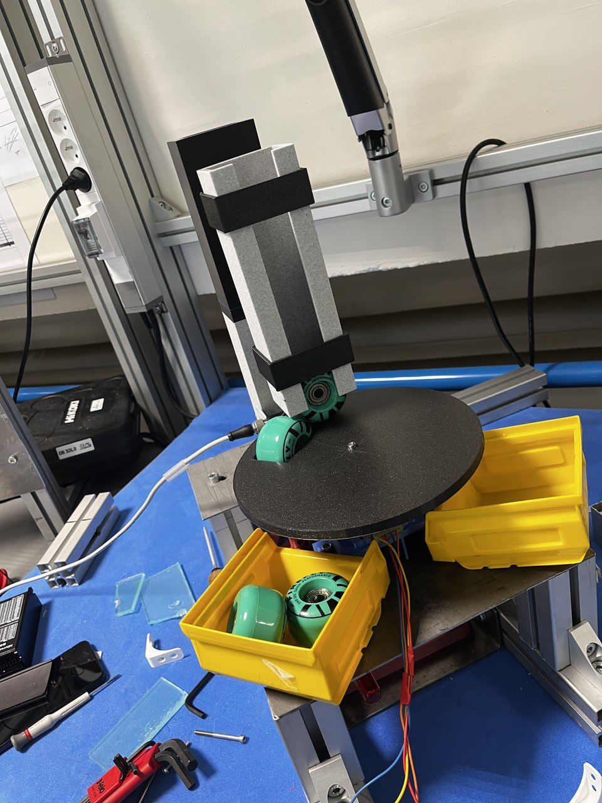

Mes Réalisations & Projets R&D
Diagnostic Logiciel par IA — IETR Rennes
Développement d'une solution logicielle embarquée de diagnostic et de maintenance prédictive pour robots pédagogiques.

Dispositif Mécatronique R&D — MatandSim
Conception et prototypage complet d'un système automatisé destiné à l'ouverture mécanique des coquilles Saint-Jacques.

Maquette 5.0 — Tri Automatisé
Conception sur Inventor et fabrication d'un système de tri de roues par couleur, géré par automate et supervisé via une interface moderne.